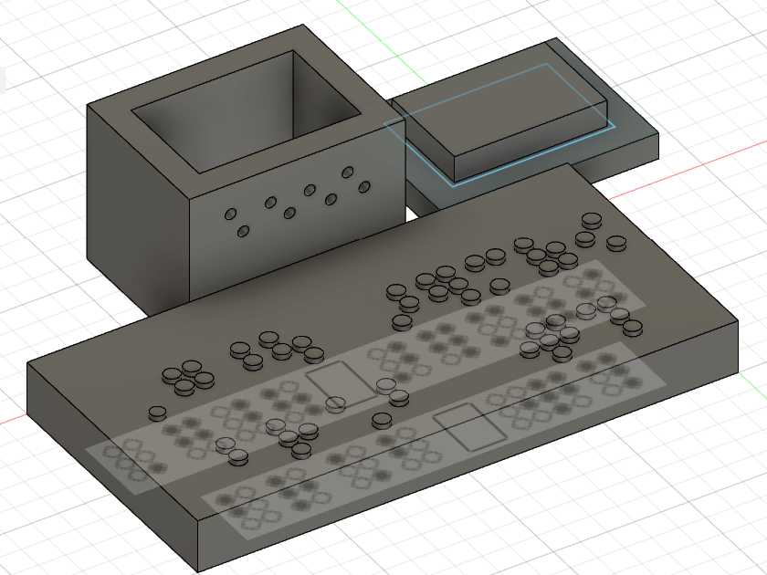
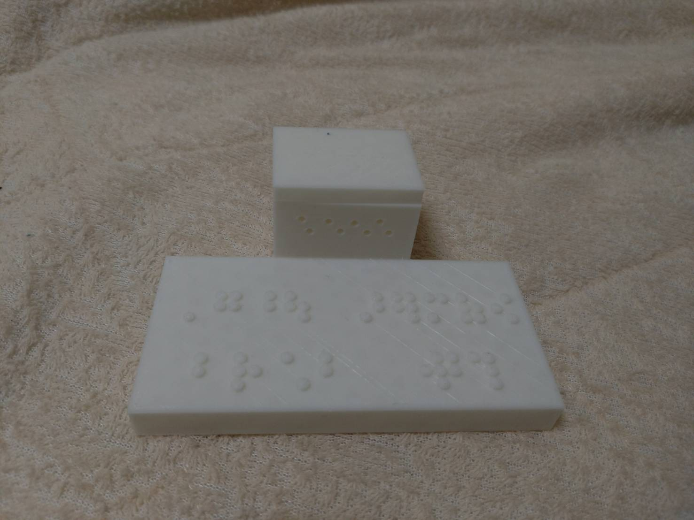

目が不自由な方にトイレの場所を教える
経緯
私たちの班では、先日の学祭で出た不審者についてが話題に上がりました。
その不審者の行動を色々と考えた結果、多目的トイレを探していたのではないかという結論に至りました。
そこで、私はトイレが見つからなくて困っている人を助ける何かを作ることにしました。
ただ作っても面白くないので、今回は全盲の方向けに作ります。
対戦よろしくお願いいたします。
具現化
まず、私が装置を作るにあたって一番最初に思い浮かんだのは、音による誘導です。しかし、3Dプリンターやレーザーカッターを使った誘導は難しいと判断し、今回は諦めました。
そして、音が駄目ならと次に目をつけたのが五感です。
視覚障がいをお持ちの方は他の五感が鋭いと言いますし、なんて考えた結果、残ったものが嗅覚でした。トイレの芳香剤などを利用することによって、その場を下品にせずにトイレを連想させることができると思います。
そうして、まずは視覚障がい者の方を装置へ誘導する方法を考えました。その後のトイレを伝える方法ですが、これは点字を利用しようと思います
設計
まず、装置は平面のパーツと立体の箱のパーツに別けることにしました。それぞれ、点字を載せる役割と芳香剤を入れる役割があります。
そして完成したデータがこちらです。

出力
上の物体を出力した結果がこちらです。

点字には「多目的トイレは一階です」と書かれてあります。きちんと読めるので、いいものが仕上がったと思います。